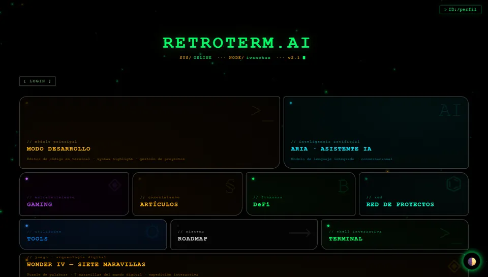

Desarrollador web · 2.º de ASIR · Madrid
Webs, herramientas y juegos que funcionan en el navegador
Construyo con HTML, CSS y JavaScript planos, PHP y MySQL, Godot 4 y Cloudflare Workers. Estudio Administración de Sistemas Informáticos en Red, así que también me ocupo de lo que hay detrás de la web.
Mi escritorio

Hub retrofuturista con asistente de IA, editor de código, juegos y herramientas de red.